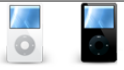

| MP3mini | Mp3grande | ||||
| Capacidad de almacenamiento | 4G (1.000 canciones) | 8GB (2.000 canciones) | 16GB (4.000 canciones) | 30GB (7.500 canciones) | 80GB (20.000 canciones) |
| Colores | 1 | 1234 | 5 | 30GB (7.500 canciones) | |
| pantalla | LCD de 3cm (diagonal) con retroiluminación | LCD de 6 cm (diagonal) con retroiluminacion | |||
| tiempo de carga | Unas 3 horas | Unas 4 horas | |||
| Unas 2 horas para alcanzar el 80% de la capacidad | |||||